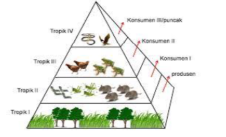

POLA INTERAKSI DALAM EKOSISTEM
- Siswa dapat menjelaskan pola interaksi dalam ekosistem
- Interaksi Antar Komponen Biotik
- Simbiosis mutualisme merupakan hubungan timbal balik antara dua makhluk hidup yang berbeda yang saling menguntungkan. Pada simbiosis mutualisme ini, kedua pihak yang terlibat simbiosis akan mendapat keuntungan masing-masing. contoh dari simbiosis mutualisme adalah Burung jalak dan kerbau, burung jalak memakan kutu yang ada di punggung kerbau. Jalak mendapat keuntungan berupa makanan, sementara kerbau akan dibantu karena rasa gatal di punggungnya jadi hilang.
- Simbiosis Komensalisme adalah hubungan timbal balik antara dua makhluk hidup yang menguntungkan satu pihak dan pihak yang lain tidak dirugikan maupun diuntungkan. Pada simbiosis komensalisme ini, hanya satu pihak saja yang diuntungkan, sementara pihak lain tidak mendapat pengaruh apa pun. Contoh simbiosis komensalisme adalah Anggrek dan pohon mangga, anggrek akan menempel di pohon mangga agar mendapat sinar matahari dan zat air. Anggrek mendapat keuntungan karena bisa melakukan fotosintesis, sementar pohon mangga tidak diuntungkan atau dirugikan.
-
Simbiosis paratisme adalah hubungan timbal balik antara dua makhluk hidup, di mana satu pihak dirugikan dan satu pihak diuntungkan. Contoh dari simbiosis parasitisme Kutu dan hewan, kutu biasa tinggal di tubuh hewan seperti kerbau, sapi, zebra, dan sebagainya. Kutu mendapat keuntungan karena mendapat tempat tinggal dan menghisap darah hewan, sementara hewan-hewan tersebut dirugikan karena darahnya terhisap oleh kutu.
- Keseimbangan Ekosistem
- Piramida Makanan
Di alam ini tidak ada satupun organisme yang dapat hidup sendirian. Setiap organisme selalu membutuhkan organisme lain. Adanya saling membutuhkan antara organisme satu dengan organisme lainnya menimbulkan interaksi. Bentuk interaksi yang sangat erat antara dua jenis makhluk hidup sehingga membentuk hubungan yang sangat khas disebut simbiosis. Dalam kehidupan, terdapat tiga bentuk simbiosis, yaitu simbiosis mutualisme, simbiosis komensalisme, dan simbiosis parasitisme :
Secara alami ekosistem dalam keadaan seimbang. Keseimbangan ini akan terganggu bila ada gangguan dari luar, seperti bencana alam atau campur tangan manusia. Komponen ekosistem tidak dapat berdiri sendiri, tetapi saling bergantung. Suatu komponen biotik yang ada di dalam ekosistem ditunjang oleh komponen biotik lainnya. Dalam ekosistem sering terjadi perubahan jumlah populasi tumbuhan, herbivora, dan karnivora (komponen biotik). Alam akan mengatur ekosistem sedemikian rupa sehingga perbandingan antara jumlah produsen dan konsumen selalu seimbang. Keseimbangan alam (ekosistem) akan terpelihara bila komposisi komponen-komponenya (komponen biotik maupun komponen abiotik) dalam keadaan seimbang. Untuk menjaga keseimbangan pada ekosistem, maka terjadi peristiwa makan dan dimakan. Hal ini bertujuan untuk mengendalikan populasi suatu organisme. Peristiwa makan dan dimakan antara makhluk hidup dalam suatu ekosistem akan membentuk rantai makanan dan jaring-jaring makanan.
Dalam ekosistem yang seimbang jumlah produsen lebih banyak daripada jumlah konsumen tingkat I, jumlah konsumen tingkat II lebih banyak daripada konsumen tingkat III, demikian seterusnya. Hal ini disebabkan oleh hilangnya energi pada setiap tingkatan makanan.Jika rantai makanan digambarkan dari produsen sampai konsumen tingkat tinggi, maka akan terbentuk suatu piramida makanan. Coba kamu amati piramida makan berikut ini!

Setiap tingkatan organisme menempati tingkatan tertentu yang disebut tingkatan tropik. Tingkatan tropik tersebut dapat dihitung berdasarkan jumlah individu, biomasa, dan kandungan energinya. Perbedaan tingkat tropic dinyatakan dalam perbandingan luas yang disusun mulai dari tingkat tropik I sampai tingkat tropik tertinggi.